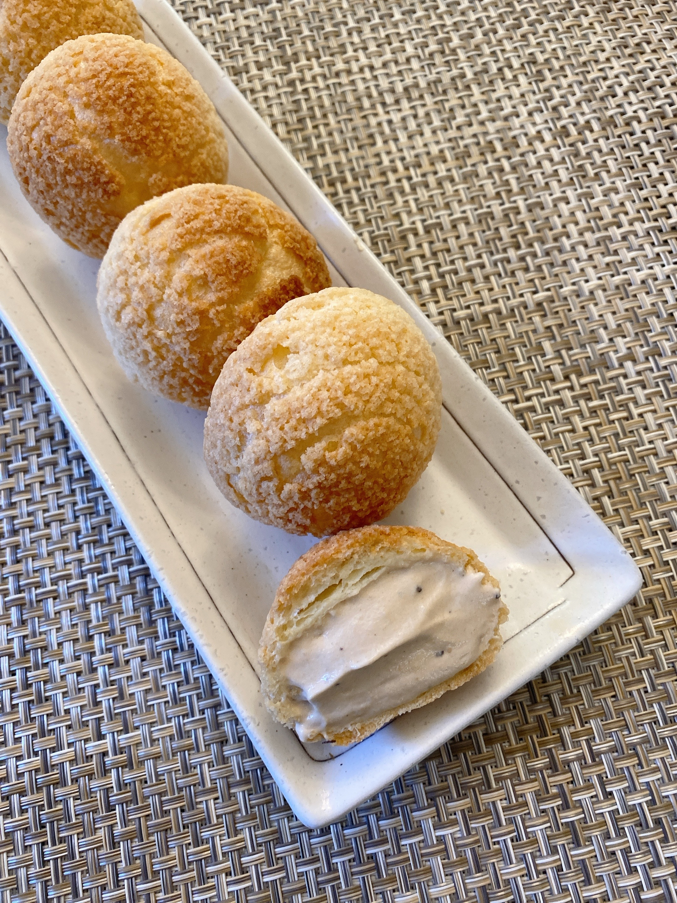

Earl Grey Cream Puff
Ingredients:
Recipe:
Mix the egg yolks and sugar in a bowl, then add the cake flour and mix well. Make a milk tea by infusing Earl Grey tea begs in boiling milk. Slowly add Earl Grey milk to the mixed flour. Constantly stir until it think. Cover and let cool. Whip the heavy cream and mix with Earl Grey cream
Add (room temperature) butter in the sugar and cake flour. Make the dough into a ball, put in a bad and roll it to 3mm thicknes and freeze. Use it after panning the choux.